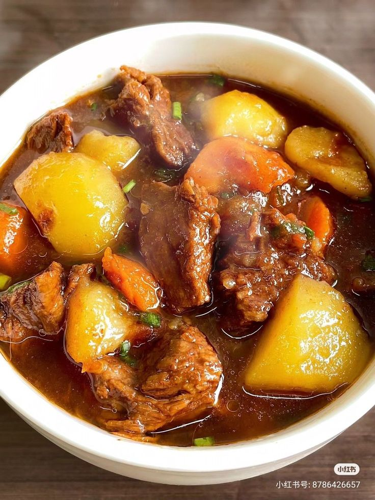

Beef Recipe

Description
This a recipe for preparing beef stew. Most of these ingredients are available
locally, here in Kenya and most probably wherever you are reading this from.
Ingredients
- 1kg beef[preferably with some bone], cut into cubes
- 2 tbsp cooking oil
- 3 medium onions, chopped
- 3 tomatoes, chopped [or 1 cup blended tomatoes]
- 2 cloves garlic, minced
- 1 tbsp ginger, minced
- 2 medium potatoes, peeled and cubed [optional]
- 1 carrot, sliced [optional]
- 1 tbsp salt [adjust to taste]
- ½ tbsp black pepper
- 1 tbsp paprika or curry powder [optional]
- 1 beef stock cube [optional]
- 2-3 cups water or beef stock
- Fresh coriander [dhania], chopped
Steps
- Brown the beef - Heat oil in a sufuria. Add beef and fry on medium heat until
lightly browned and its natural juices reduce.
- Add onions - Add chopped onions and cook until soft and slightly golden.
- Add aromatics - Stir in garlic and ginger. Cook for about 1 minute until fragrant.
- Add tomatoes - Add tomatoes and cook until they soften and oil starts separating from the mixture
- Season - Add salt, black pepper, paprika/curry powder, and stock cube [if using]. Mix well.
- Simmer - Add water or stock, cover, and simmer on low heat for 45-60 minutes until the beef is tender.
Add water gradually if needed
- Add vegetables [optional] - Add potatoes and carrots. Cook for another 15-20 minutes until soft.
- Finish - Sprinkle chopped dhania, simmer for 2 more minutes, then turn off the heat.
Serving Suggestions
Serve hot with ugali, rice, chapati, or mashed potatoes.
For a richer flavor, let the stew rest for 10 minutes before serving.
Home